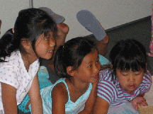

Newsletter

FCC BC newsletter, "Friends of the Family" is mailed to members three times a year in January, May and September.
The newsletter is dedicated to providing information about what is going on in our community. It discusses what it means to be a transracial adoptive family, and helps profile opportunities to bring Chinese culture into our families. We bring news on what is going on in the adoption community, adoption laws, and in China .
We invite members and non-members to provide articles, information pieces, book reviews, movie reviews or anything you think might be of interest to FCC members. The deadline for submission to the newsletter is the 15th of December, April and August.
Here are some articles from previous issues. All articles presented here are displayed with the permission of their authors. They are for the use of our members, or anyone else who is contemplating or has completed an adoption. They may not be reprinted or copied to another website without the express permission of the author. E-mail links are provided to that author where appropriate.
- Report from the Co-Chairs - Fall 2002